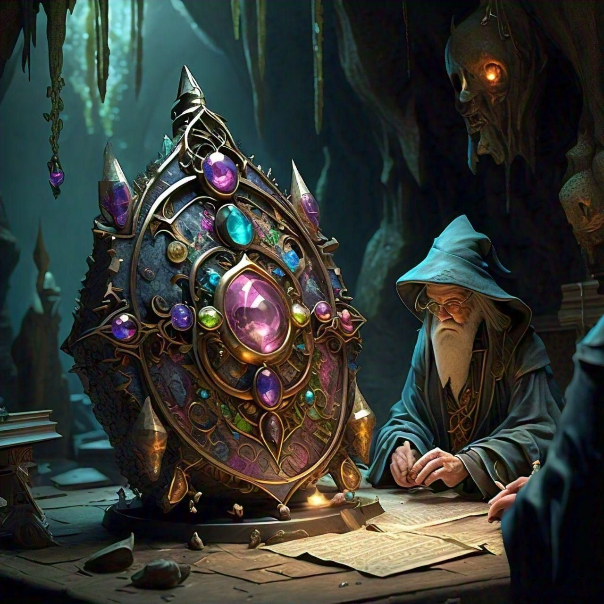

Amsterdam , NL
Ancient Spellbook Discovered in Forbidden ForestNEW
A spellbook found in the Forbidden Forest stirs debate among wizards. It holds powerful incantations, raising concerns about potential dangers and benefits. The Grand Wizard Council will review its contents.
Arcane Whispers
A Fabled Collection
The Mystical Chronicles
of Ancient Lore
Tip! Swipe left to unveil secrets
The Rogue Wand Incident NEW
A strange enchantment baffles wizards. Spells go haywire, causing mayhem in the market. Experts are puzzled by its origin, suspecting rogue magic or dark forces at play.
WIZARD
Mystical Revelations!
A powerful artifact was discovered in the depths of the Enchanted Cavern, captivating the attention of sorcerers and scholars alike. Experts believe it holds the key to ancient spells. The Grand Wizard Council is investigating its origin, seeking to unlock its hidden potential and secrets.
HOGWARTS SCHOOL OF WITCHCRAFT
MAGICAL CURRICULUM OFFERED
EXPERT INSTRUCTORS TEACHING
BASED IN SCOTLAND, UK"
The legendary Archwizard Eldrin reappears after centuries, drawing magical creatures to him. His return has sparked speculation of forgotten spells. The Grand Wizard Council convenes to assess the potential impact of his knowledge, fearing it could shift the balance of magical power.
The legendary Hogwarts Castle undergoes a major expansion as new wings are added. Enchanted architecture and hidden rooms continue to baffle students. Professors anticipate the discovery of forgotten magical artifacts within the newly unveiled sections, stirring excitement among scholars.
A swarm of mischievous fairies was spotted near the Forbidden Forest. Hogwarts professors are investigating their sudden appearance, suspecting magical disturbances. Students have been warned to avoid the area, as the fairies are known to cause minor magical pranks and mayhem.
Dark magic rises again as rumors of Voldemort’s followers resurface. Aurors are investigating mysterious sightings, sparking fears that the Dark Lord’s legacy still lingers.
Hufflepuff students shine this year, winning the Herbology Cup and excelling in Care of Magical Creatures. Their dedication and teamwork continue to impress Hogwarts staff and students alike.
Ravenclaw House, founded by the brilliant Rowena Ravenclaw, is known for its legacy of wisdom, creativity, and learning. Its origins emphasize intellect above all else.